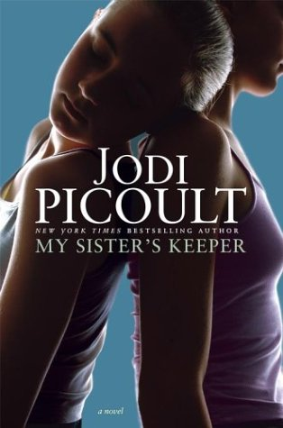
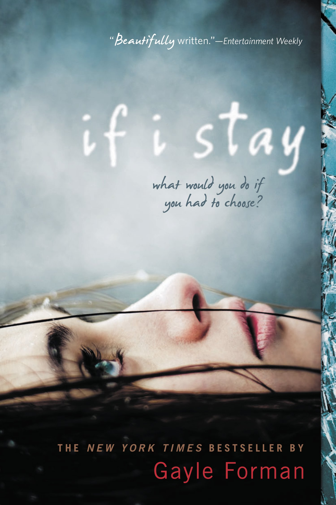
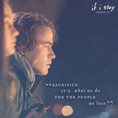
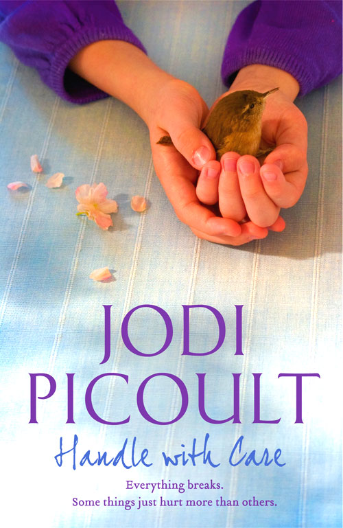
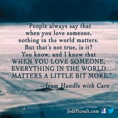

This is one of my favorite books because it shows how hard it is
for a child to be pressured into doing something they don't want.
It also shows how one decision can impact many people at once.


This is another one of my favorite because it is about a girl who
lost everything and was struggling with the decision of whether
she had anything worth living for anymore.It showed how hard it
was for her to make this decision and all the thoughts that came
mind.
 
This one of my favorite books because it is about a girl who has
fragile bones and how this makes certain tasks in her life more
difficult. In addition, it shows how having a child with a certain
disability can result in the parent making decisions that wouldn't
be made on a daily basis.